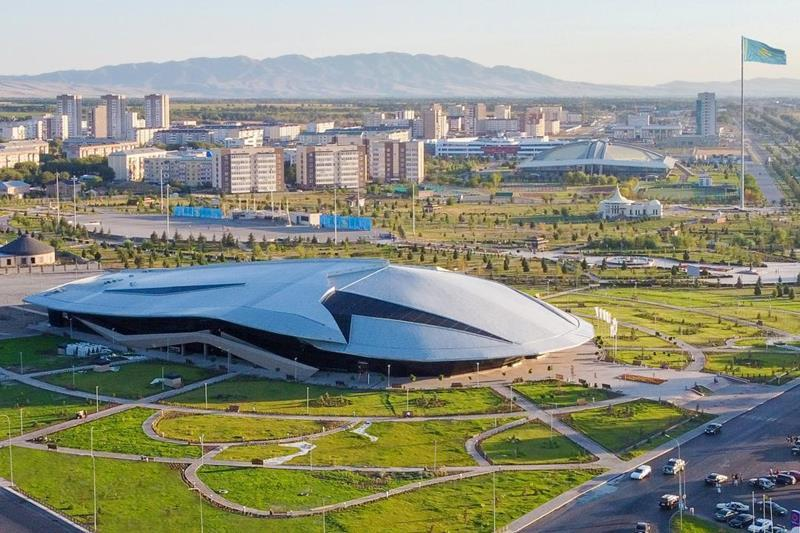

Центральный парк
Главный городской парк с зелёными зонами для прогулок, детскими площадками и местами для отдыха. Отличное место для семейного отдыха.

Арка «Жетісу»
Арка стала символом города. Она часто используется как место для фото и городских мероприятий.

Музей Тынышпаева
Музей посвящён известному деятелю науки и культуры. Здесь можно узнать о его жизни и достижениях.

Музей И. Жансугурова
Музей посвящён писателю и поэту. Экспозиция включает документы, личные вещи и творческое наследие Жансугурова.

Центральная площадь
Главная площадь города, место проведения праздников, концертов и народных мероприятий.

Кольцо с мини-Байтереком
Дорога с круговым движением, в центре которой установлен мини-Байтерек — символ города и популярное место для фотографий.

Городской бассейн
Бассейн с открытыми и закрытыми дорожками, зонами отдыха и спортивными программами для всех возрастов.